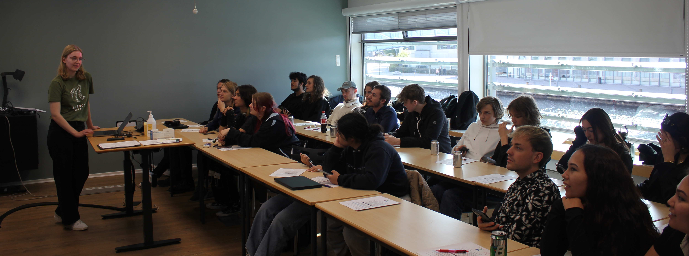

Teaching
Aalborg University provides teaching according to the
PBL teaching method. During my PhD, I have been supervisor and examiner for the following semester project courses:
During my bachelor and master studies at the University of Groningen, I was a teaching assistant for the following courses:
- Machine Translation (2021-2022)
- Fundamentals of Machine Learning (2020-2021)
- Human-Computer Interaction (2019-2020)
- Kaleidoscope (2019-2020)
Academic Service
I serve(d) as a reviewer for the following venues:
- ACL Rolling Review (e.g. ACL, EMNLP, NAACL, EACL): 2023 - ongoing
- Revista Tradumàtica: tecnologies de la traducció: 2024
- MT Summit: 2025
- ACL Student Research Workshop: 2025
Other activities:
Research Talks
I gave the following talks in research groups and events:
- Typological Diversity in NLP: What, Why and a Way Forward. University of Cambridge, England (online), 7 March 2025.
- Rethinking the Interaction between Linguistic Typology and NLP. ITU, Copenhagen, Denmark, 21 February 2025.
- Beyond Post-Hoc Typological Diversity in NLP. Utrecht University, The Netherlands, 9 January 2025.
- Who Cares about Typological Diversity? AAU-NLP symposium, Denmark, 3 December 2024.
- Language Similarity in Machine Translation: A Typological Perspective. LAGoM group, KU Leuven, Belgium, 1 August 2024.
- Merging Close and Distant Perspectives on Language: Using Linguistic Typology in NLP. Helsinki-NLP group, University of Helsinki, Finland, 18 April 2024.
I gave the following talks at conferences and workshops:
- NoDaLiDa/BalticHLT 2025: Tokenization on Trial: The Case of Kalaallisut–Danish Legal Machine Translation
- EAMT 2024: Towards Tailored Recovery of Lexical Diversity in Literary Machine Translation
- SIGTYP 2024: A Call for Consistency in Reporting Typological Diversity
- EACL 2024: Multilingual Gradient Word-Order Typology from Universal Dependencies
Workshops for High School Students
During my PhD, I started volunteering to give workshop sessions to high school students about machine translation. Generally, I provide 90-minute sessions in which we alternate between lectures, exercises on paper, quizzes and interactive demos. So far, I have held the workshop at the following events:
- U-faktor day 2024
- Faglig Inspirationsdag 2024
- AAU on Demand, Falkonergårdens Gymnasium 2024
- SOP-day 2024
- Studiepraktik 2024
- Science Day 2024
- Studiepraktik 2023
- Science Day 2023
